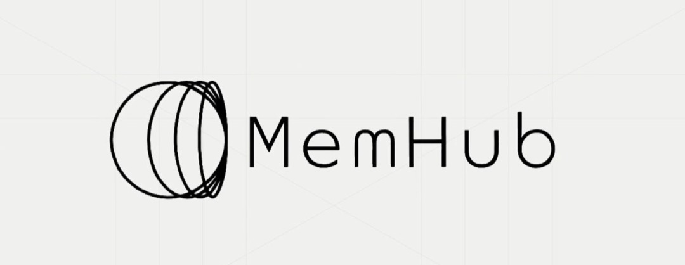
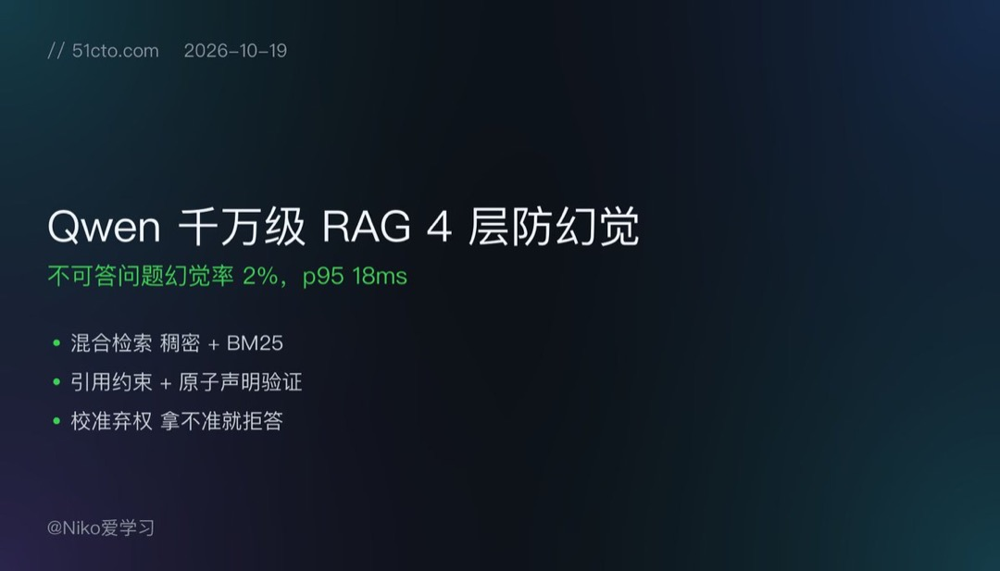
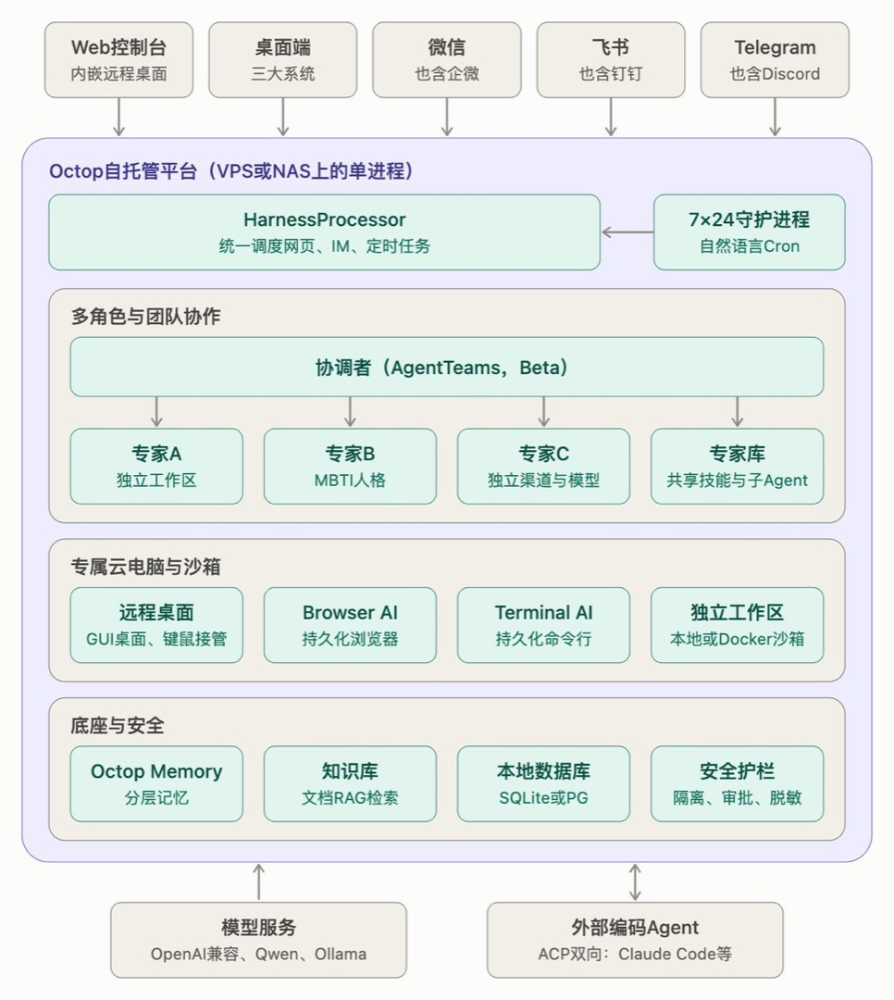
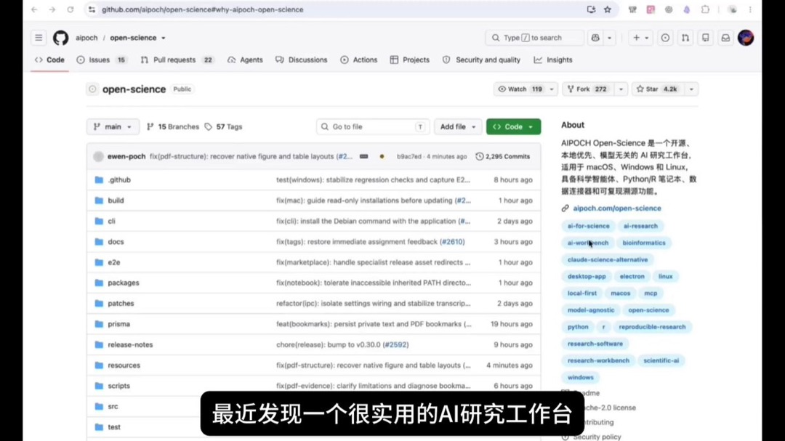
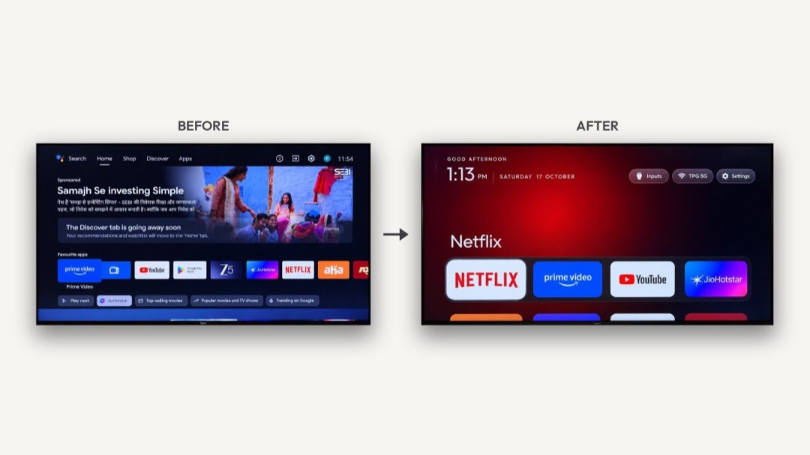

本期速览
01 RAG面试详解覆盖82场真实追问
02 混元Hy Memory 2.0开源发布
03 Qwen RAG将千万文档幻觉率压到2%
04 腾讯Octop开源多用户AI工作空间
05 PaperBanana自动生成学术插图
01｜RAG面试详解覆盖82场真实追问
来源（X） · @cxjwin · 2026-10-19 00:03
这篇按 RAG 系统本身来讲：
先给一张整体图：离线解析、切分、向量化、建索引，在线改写、召回、融合、重排、生成
每一环讲它解决什么问题、原理和取舍，后面附面试里的真实追问：块大小怎么定，有了向量检索为什么还要 BM25，为什么不能全部 rerank，召回率 85% 是怎么算出来的
评测、更新和权限各有一节，最后是两分钟答法和常见失分点
67 位作者里，近一半被问到的是自己项目里的 RAG：块切多大，top-k 取几，召回率多少，怎么测出来的。准备这题，先把自己项目的数字备好。
引用内容
码良 @cxjwin
中文译文
原文
02｜混元Hy Memory 2.0开源发布
来源（X） · @ElliotChen · 2026-10-19 14:47
论文里有个细节挺有意思：他们特意选了 EverOS（EverMemOS）作为训练中完全没见过的「留出框架」来检验泛化能力，并称它是「本次评测中最强的开源社区记忆基线」。
在 EverOS 上，他们测的每一个模型分数都比在 Mem0、MemOS 上更高。
要知道，EverOS 是 @EverMind 去年就开源的工作，快一年过去了，依然是别人拿来对标的标尺，我们表示很荣幸，同时也表示行业对我们的认可。🤝
不过这些都不重要了。这一年我们也没闲着，下个月有重磅更新要发布，这次也非常能打。
敬请期待。
引用内容
Tencent Hy @TencentHunyuan
中文译文
🚀 Hy Memory 2.0 发布——开源模型、框架和 MemHub。
你私密的记忆管家。
框架处理对话、工作和代码记忆。
在4项基准测试中排名第一。
Hy-Memory-30B-A3B 在各大框架中表现超越 Opus 5。
MemHub（CLI + Mac）可在10多个AI工具间同步。
💻➡️
🔗 SDK & MemHub: https://github.com/Tencent-Hunyuan/Hy-Memory
🔗 模型: https://huggingface.co/tencent/Hy-Memory-30B-A3B#Hunyuan #HyMemory #AgentMemory
原文
🚀 Hy Memory 2.0 is out — open-source model, framework, and MemHub.
Your private memory steward.
Framework handles chat, work & code memories.
#1 open-source on 4 benchmarks.
Hy-Memory-30B-A3B beats Opus 5 across major frameworks.
MemHub (CLI + Mac) syncs across 10+ AI tools.
💻➡️
🔗 SDK & MemHub: https://github.com/Tencent-Hunyuan/Hy-Memory
🔗 Model: https://huggingface.co/tencent/Hy-Memory-30B-A3B#Hunyuan #HyMemory #AgentMemory

03｜Qwen RAG将千万文档幻觉率压到2%
来源（X） · @ai_super_niko · 2026-10-19 12:00
▸ 混合检索（稠密 + BM25）
▸ 引用约束生成 + 原子声明验证
▸ 校准弃权：拿不准就拒答
▸ 千万级向量仍保 18ms p95
四层防幻觉的姿势很标准，没什么花活，但拼在一起就是生产级。多数团队卡在"加个向量库就完事"，没人愿意做"声明级验证"和"弃权"那两步——前者工程量大，后者要说服产品方接受"模型会说不知道"。2% 不是天花板，是工程纪律的回报。这套架构值得照抄。

04｜腾讯Octop开源多用户AI工作空间
来源（X） · @Gorden_Sun · 2026-10-19 14:21
腾讯开源 Octop，自托管、支持多用户与多智能体的AI助手平台，基建完备，功能强大。接上模型，部署到VPS或者NAS上就是你自己的 Grok Bot。
功能包括：
· 专属云电脑与沙箱：Octop 部署在 Linux VPS 上，自带 远程桌面 + Browser AI + Terminal AI + 独立工作区，拥有 GUI 桌面，持久化的浏览器和命令行；
· 人工接管：Octop 的Web 控制台，直接内嵌实时的远程桌面，支持键鼠控制；
· 多角色与团队协作：支持创建多个专家Agent，由协调者自动调度多位专家；
· 常驻任务与主动任务：服务端守护进程 7×24 小时在线，支持自然语言配置 Cron 定时任务，实现主动推送；
· 多端支持：不仅有 Web 端和桌面端，还支持接入微信、飞书、Telegram、Discord；
Github：https://github.com/TencentCloud/Octop

引用内容
Tencent AI @TencentAI_News
中文译文
我们开源了 Octop，一个面向你自己、你的家人和你的团队的多用户AI工作空间。
每个人都有自己的登录账号，可以创建多个 agent，每个 agent 拥有独立的工作空间。你在任何一个账号中所说或保存的内容都不会出现在其他账号中。几乎所有东西都可以替换：模型、存储、记忆、插件。每个 agent 都自带浏览器、终端和远程桌面。
你可以将工作转交给 Claude Code、Codex、Cursor、OpenCode、CodeBuddy 以及你已经在使用的其他编码 agent。它还可以出现在你的 Telegram 和 Discord 群聊中。
它运行在你自己的机器上，只需一条命令即可启动：octop run。
完整详情见仓库：http://github.com/TencentCloud/Octop。
原文
We open sourced Octop, a multi-user AI workspace for yourself, your family and your team.
Everyone gets their own login and can create multiple agents, each with its own workspace. Nothing you say or save shows up in another account. Almost everything can be swapped: models, storage, memory, plugins. Each agent comes with a browser, a terminal and a remote desktop.
You can hand off work to Claude Code, Codex, Cursor, OpenCode, CodeBuddy and other coding agents you already use. It also lives in your group chats on Telegram and Discord.
It runs on your own machine, and one command is all it takes: octop run.
The full picture is in the repo: https://github.com/TencentCloud/Octop.
05｜PaperBanana自动生成学术插图
来源（X） · @alacheng · 2026-10-19 14:35
PaperBanana（后来也叫 PaperVizAgent）是一个用 AI 自动生成学术论文插图的工具Agent
它主要做的事是：
-把你论文里的方法描述文本（methodology），自动转成出版级别的学术示意图（流程图、架构图、方法图等）。
-也能生成统计图表（plots）。
-用多 Agent 协作完成：检索参考图 → 规划内容 → 调整学术风格 → 生成图片 → 自我批评迭代优化。
简单说，就是帮科研人员少画图、少调格式，把“用文字讲清楚的方法”自动变成好看、规范的学术插图。
论文作者来自北京大学和 Google Cloud AI Research，目标是降低画论文图的门槛。目前开源，需要自己配置 Gemini 或其他模型的 API Key 使用。
论文：https://arxiv.org/abs/2601.23265v1
实现github仓库：
作者维护的仓库：
https://github.com/dwzhu-pku/PaperBanana
这是第一作者 Dawei Zhu 维护的版本，从 Google Research 的官方仓库 fork 而来，并持续更新（支持 Gradio/Streamlit、Hugging Face Spaces 演示、OpenRouter 等）。README 明确说明原版已开源在 Google Research。
官方原始仓库（Google Research）：
https://github.com/google-research/papervizagent
论文最初开源的版本，后来改名为 PaperVizAgent（formerly PaperBanana）。
项目主页：https://dwzhu-pku.github.io/PaperBanana/
在线演示：https://huggingface.co/spaces/dwzhu/PaperBanana
另外还有一些社区复现
（如 https://github.com/llmsresearch/paperbanana）
06｜Open-Science AI研究工作台
来源（X） · @Saccc_c · 2026-10-19 14:59
我找到了一个帮你打通论文这条AI信息渠道的方法，就是利用@aipoch_ai 开源的Open-Science工具辅助进行前沿AI研究（GitHub🔗：https://github.com/aipoch/open-science）
它是一个把读论文、分析数据、运行代码和生成图表放在一起的 AI 研究工作台，支持接入多种不同的模型，也可以利用Codex、Claude的订阅直接接入使用
我实际体验下来发现，这个工具是真的能通过可视化图表，帮助你轻松理解论文里的概念与核心发现，也能让你亲自动手测试，验证自己的想法
视频中，我以Google DeepMind 参与的一篇探讨写作「AI 味」的论文为例，演示了从理解论文到实际应用测试的过程。我按论文中的方法，对比了孙哥的爱情小作文和 ChatGPT 写的同题故事，发现前者的叙事更复杂，后者则更偏向线性叙事，完美符合「AI味」特征
如果你想深入学习 AI，我真心建议定期学习一些高质量的论文研究，而Open-Science绝对是你必备的学习工具

07｜Codex逆向Kindle实现书库同步
来源（X） · @turingou · 2026-10-19 11:37
然后它给我设计了一个界面，可以展示我所有 Apple Books 和微信读书里的书。如果我想在 Kindle 上同步这些 EPUB，只要点击一下，电脑就会自动帮我把它 drop 过去！
引用内容
郭宇 guoyu.eth @turingou
现在我希望把 Kindle 改成配合 Agent 使用的版本：可以直接在 Kindle 上找书，它会向电脑或服务器上的 Agent 发起请求，自动生成 EPUB 电子书；或者我通过快速扫描系统录入的书籍，也能直接同步到 Kindle 上。
再往远做一点，它甚至还可以同步我苹果系统里的书库，乃至联动微信读书
08｜tv-vibehack一键去电视广告
来源（X） · @Gorden_Sun · 2026-10-19 11:18
作者在给父母使用小米电视时发现，电视里充斥着开机广告、推广内容和各种冗余预装软件。父母在打开像 Netflix 这样的常用软件之前，必须先看一遍广告，非常闹心。
于是作者利用Claude Code做了tv-vibehack，无需root，只需要电脑与电视连接同一个 Wi-Fi，在电视设置中开启调试模式。整个过程不需要插数据线，也不会改动电视底层的固件系统。
改造完成后，电视的主界面直接变成了类似苹果电视盒子的极简风格。屏幕背景干净纯黑，没有任何推送和弹窗，底部整齐排列常用软件，顶部只显示时间、日期和输入源切换按钮。启动器只有 1.6 兆，纯 Java 写的，1G 内存的老电视也跑得动。
项目地址：https://github.com/Gathin23/tv-vibehack
